Piece Chains
OK so I lied about getting the syntax-highlighting implemented this time around. I got bogged down in “regular expression hell” and needed something else to concentrate on. So during the summer period I’ve instead been slowly implementing Neatpad’s text-editing capability. As I hinted at in the very first installment of this tutorial series, I have decided to follow the “Piece Table” design. The aim of this tutorial will be to discuss the rationale behind this decision and also highlight some (but not all) of the implementation details. Note that I will not be discussing issues related to the editing of Unicode text (this will come in the next tutorial). Instead we will look at the design of the piece-table from a low-level perspective, independent of any Unicode concerns.
Several years ago when I started writing HexEdit there was very little information I could find regarding editor design. Google was unheard of and AltaVista was the search-engine of choice. I had a 33k dial-up modem and the single resource I stumbled over at the time was a paper written by a University professor named Charles Crowley. His paper ‘Data Structures for Text Sequences’ and the ‘Piece Table’ approach he described heavily influenced the design of HexEdit, making it one of the slickest hex-editors available. I later documented HexEdit’s piece-table design (or span-table, as I called it then) in my ‘Memory Management for Large File Editors’ article. Today there seems to be a little more information available regarding Piece-Tables - and certainly more evidence of people using this design in their projects:
- AbiWord is an extremely impressive cross-platform, open-source word processing package. Some of the authors maintain blogs in which they have discussed aspects of AbiWord’s design. Of particular note is the discussion regarding AbiWord’s Piece Table design, in which the author details the transition to a ‘red-black’ binary tree representation of the piece-table.
- WinAsm Studio is an IDE for assembly-language programming. Antonis Kyprianou (the author) is also writing a ‘piece-table’ based editor for inclusion within the IDE.
- Tweak is a terminal-based Unix hex-editor. According to the website description tweak uses a binary tree data structure to represent edits to the file. The article is well worth a read and there is some very interesting information available there.
- C++ Rope class looks to be quite interesting. I know almost nothing about it, other than what is described on that page. The description seems to indicate that the rope-class is using a piece-table implementation but I don’t know this for sure.
Piece-tables are not a new development by any means and have been around for several years in one form or another:
- Xerox PARC (Palo Alto Research Center) produced the Bravo text editor in the 1970s. Bravo was the work of Charles Simonyi and Butler Lampson, and used a “Piece Chain” to implement it’s editing functionality. Unfortunately the Alto platform (on which Bravo ran) is now so old that information on the Bravo editor does not appear to be available any more. Maybe the Altogether project (an Alto emulator) will get off the ground and we can re-explore these old computer systems.
-
Project Oberon is an operating system, compiler and programming language. The classic computer-science book ‘Project Oberon’ is available in PDF format here and details the design of the Oberon platform. The book has a very interesting chapter on text-management, in which the piece-chain technique is described in great detail.
- Mutable Text is a Modula-3 interface for editing text streams. MText implements a piece-table design using a balanced binary tree for efficiency. The only information I could gather on the MText interface was from Compaq’s old research website. Because Compaq no longer exist (HP bought them) I had to use Google-Cache to find this information.
Obviously the piece-chain technique has been around for over 30 years now, with the first notable occurance with the Bravo editor. The surprising thing is that this technique is still quite rare even today.
The Perfect Text Editor
Of course, there is no such thing as the perfect text editor - otherwise we would all be using the same tool and I wouldn’t be writing this article-series in a (likely futile) attempt to create my vision of a perfect editor.
Even if we ignore the overwhelming differences between editor’s user-interface design, there is still a great diversity in editor implementation. What I mean by this, is that there is no single ‘true’ design that all text editors follow. Instead many distinct methods exist - such as the buffer-gap scheme, linked-lists of lines, and the somewhat rarer piece-chain techniques - all of which have been used with varying degrees of success over the years.
One of the reasons the piece-chain method is not very common is the complexity of it’s implementation for text editors. It is not the actual piece-management that is difficult, but rather the maintanence of the editor’s line-buffers that becomes troublesome. For this reason many editors choose not to implement piece-chains - and mature editors such as Vi and Emacs can be seen to be very successful without this design.
The fact that all of these techniques exist is a strong indication that there is no overwhelming ‘best’ design for text-editors. I don’t know at this stage if I am making the right decision by implementing piece-tables for Neatpad. However I am determined to complete this project, and at the very least I will know one way or another, if the piece-table design is suitable for a plain-text editor.
Piece Chains with Linked Lists
Neatpad implements it’s piece-chain data structure using a doubly-linked list, which closely follows the original design of HexEdit. Whilst other structures such as binary-trees could be used, a linked-list is preferred for it’s simplicity. The original design for HexEdit maintained a Head and Tail pointer for representing the start and end of the piece-chain. Most people should be familiar with this concept; if you aren’t then I would suggest reading up on this subject before going any further. Anyway, the classic doubly-linked list (which I used in HexEdit) is illustrated below:
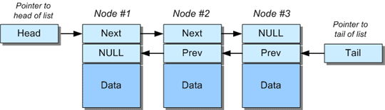
The snippet below further illustrates how such a linked-list might be initialized:
// sequence constructor
sequence::sequence()
{
head = NULL;
tail = NULL;
}
The small problem with this design is the way the head and tail pointers are managed. Whenever a node is inserted at the front or back of the list, specific code is required to handle these ‘special case’ conditions because the head or tail pointers need updating to point to the new nodes. Link management is cumbersome and over-complicates sequence manipulations a great deal.
An alternative design is to maintain what are termed ‘sentinel’ nodes. In this model, two dummy nodes are introduced at the start and end of the list. Their contents are not defined (lengths will be zero), but their very presence means that every node in the list is guaranteed to have a valid neighbour. In other words, apart from the sentinels themselves, every node’s next and previous link always point to a valid node. This essentially removes any ‘special case’ code for dealing with insertions or deletions at the start and end of the list.
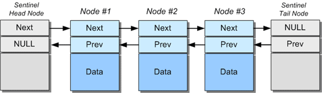 Linked-list with sentinel nodes.
To further illustrate, an empty list contains just two nodes; the head and tail sentinels, which simply point to each other.
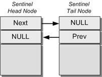 Empty list.
Supporting this linked-list design is very simple. Instead of initializing the head and tail pointers to NULL, two ‘empty’ nodes are created which link between each other. Any nodes that are subsequently added are inserted in-between the sentinels.
sequence::sequence()
{
head = new span(0, 0, 0);
tail = new span(0, 0, 0);
head->next = tail;
tail->prev = head;
}
It is surprising how much work this simple idea saves. Of course I can’t claim credit for this method - I originally read about this trick in one of Michael Abrash’s assembly-optimization books many years ago.
Spans and Pieces
The term piece-chain is nice and succinct, because one can straight away imagine the pieces of text being chained together within the data structure. However I use the term span in Neatpad to represent each piece of text in the chain, purely because this is how I did things in HexEdit. There is no difference between a piece and a span apart from the name - they both serve the same purpose.
// span - private to the sequence
struct span
{
span * next;
span * prev;
size_w offset;
size_w length;
int buffer;
};
The piece-table is formed by chaining together the span objects through their next and prev links. The linked-list is maintained by a sequence C++ class, which encapsulates the entire data structure inside a single object. The insert, replace and erase functions are included to provide the editing interface:
// define the type of strings the sequence will hold
typedef wchar_t seqchar;
class sequence
{
public:
bool insert (size_w index, seqchar *buffer, size_w length);
bool replace (size_w index, seqchar *buffer, size_w length);
bool erase (size_w index, size_w length);
bool undo ();
bool redo ();
// other members snipped
private:
span * head; // pointers to list sentinels
span * tail;
};
The central idea behind spans is that they provide a level of indirection to the underlying file contents. The individual nodes never store any text - they only refer to ranges of text stored in the original file, or to any range of text in the modify-buffer added due to text insertions. You can see from the definition above that a span has no means for storing text - instead the offset, length and buffer fields identify a range (or piece) of text in the original file.
The image below illustrates a typical piece-chain organisation. The ‘original file’ buffer is initialized with the text “The brown fox jumped over the lazy dog”. The single word “ing” has been inserted into the sequence - with this text appended to the modify buffer. The spans in the piece-chain form the sequence “The jumping dog”.

An important thing to note is that spans have no knowledge of their logical position in the sequence. They only know the physical location of the data they reference. This has the advantage that new spans can be inserted or deleted from the piece-chain with no effect on the other spans in the list. This is why inserting and deleting from a piece-table is so fast - assuming that you know where to insert.
The flexibility of the piece-table’s is also it’s biggest drawback. Because spans don’t know their logical position there is no way to directly access a specific text-offset within the document. All accesses must go through the linked-list by starting at the head of the list. Any time we want to locate a specific character-offset we must iterate through each span in turn, summing their lengths in order to keep track of the current logical position:
span * sequence::spanfromindex (size_w index, size_w *spanindex = 0)
{
span *sptr;
size_w curidx = 0;
// scan the list looking for the span which holds the specified index
for(sptr = head->next; sptr->next; sptr = sptr->next)
{
if(index >= curidx && index < curidx + sptr->length)
{
if(spanindex)
*spanindex = spanidx;
return sptr;
}
spanidx += sptr->length;
}
// insert at tail?
if(sptr && index == curidx)
{
*spanindex = curidx;
return sptr;
}
return 0;
}
The spanfromindex function above shows how the piece-chain is traversed from the start in order to locate the span. The lengths of each span are summed together until the correct node is found. The simplicity of a linked-list design is also it’s biggest drawback - random access to a linked list is slow.
Unlimited Undo & Redo
In theory unlimited undo+redo is incredibly simple with piece-tables. In fact it is almost ‘free’. This is one reason why this technique is so desirable - the big selling point for me is that the piece-chain is (in computer-science terms) a Persistent Data Structure. In essence this means that the piece-chain preserves older versions of itself even when modified. Most importantly these older versions are easily restorable whilst still maintaining the integrity of the data-structure.
It is important to remember that the underlying data in the file we are editing never changes - it is only the linked-list nodes (the spans) that change, in order to represent modifications to the file. Therefore there is no need to maintain separate data-buffers containing the document contents which have been modified. The memory-savings the piece-chain brings are significant enough to warrant the added complexity this method.
The key to Neatpad’s implementation of undo/redo is the use of span-ranges. Quite simply, a span-range is an object which represents a contiguous range of spans within the sequence. Any time the piece-chain is manipulated, a span-range object is pushed onto the undo stack which represents the range of spans affected by the edit.
struct span_range
{
span * first;
span * last;
bool boundary;
size_w sequence_length;
};
Each span-range is therefore used to represent a single modification to the sequence. The first and last fields point to the range of spans that encompass a particular edit operation. All spans in the range are linked together internally using their regular next and prev pointers. Now whilst a span-range can conceptually hold multiple spans all chained together, it can also reference a single span by pointing both first and last to the same span.
Notice how the sequence-length is stored inside each span-range. This is necessary because we don’t want to re-calculate the sequence-length each time we undo or redo an action (doing so would be very slow for large piece-chains). By preserving the sequence-length prior to editing the sequence we can easily restore this value when we undo.
Span boundaries are a special form of span-range. Think of a span-boundary as the gap between two adjacent spans. A span-range is still used to represent this form of ‘empty’ range, with its boundary field set to ‘true’ to indicate what kind of range it is.
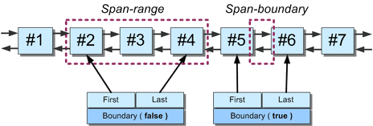
The image above illustrates both kinds of span-range. The range on the left is a ‘regular’ range, with boundary set to false. The range on the right is an ‘empty’ range, and the span-range object has it’s boundary field set to true.
In actual fact span-ranges are used for more than just holding history - they are also used as auxiliary helper objects when manipulating spans during insert and erase operations. They are just a convenient way to store sections of the piece-chain as they are moved in and out of the sequence.
Inserting Data
Data insertion is by far the simplest to implement. There are two basic scenarios that we need to consider - inserting in the middle of a span, and inserting at a span boundary. As we look at these operations in more detail, remember that edits to the text-sequence are just modifications to the spans in the list. Note that in all of these examples, the text is shown to be contained within each span. This is for illustrative purposes only - because we know that in reality the spans do not hold any text, rather they refer to ranges of text in the original or modify buffers. In addition the head and tail sentinel nodes are also shown - as the grey blocks at either end of the list.
Inserting in the middle of a span is the first scenario. We start with the piece-chain in the following state:

The sequence holds the text “TheQuickBrown” and for whatever reason the linked-list holds three spans. Our first example will be to insert the string “xxxx” at index “6”. This position in the sequence happens to fall in the middle of the second span.
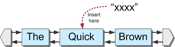
Inserting in the middle of a span requires that the span be split into two separate pieces - which represent the data before and after the insertion point. A third span is linked in-between these two new pieces which will represent the actual inserted data. As expected the inserted data is appended to the ‘modify buffer’ which leaves the original file-buffer untouched.
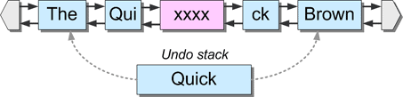
Although we have conceptually split a span in half in order to represent an ‘insertion’, in reality we do not do this. If you study the piece-chain you can see that the span representing the word ‘Quick’ has been removed from the sequence, to be replaced with three new spans. However rather than deleting this span we instead preserve it, by holding it inside a span-range object. This span-range is then pushed onto our ‘undo stack’ in order to represent the range of spans that were modified by the insertion.
This strategy of span preservation is key in this implementation of a persistant data structure. Notice that after the insertion has taken place, no spans in the piece-chain reference the “Quick” span anymore. However “Quick” still maintains it’s own links back into the main list. This is a very important detail, because when it comes to restoring the sequence (undoing this last action) we need to know where-abouts in the list the spans on the undo-stack should be re-inserted.
Shown below is the basic outline for how data is inserted for this first scenario, taken from the sequence::insert function:
// initialize a new 'undo'. It will be pushed onto the undo-stack.
span_range *oldspans = init_undo(index, length, action_insert);
span_range newspans;
// preserve the span that we are inserting into
oldspans->append(sptr);
// new spans for before and after the insertion point
newspans.append(new span(sptr->offset, insoffset, sptr->buffer));
newspans.append(new span(modbuf_offset, length, modifybuffer_id));
newspans.append(new span(sptr->offset+insoffset, sptr->length-insoffset, sptr->buffer));
// insert the new pieces into the sequence!!
swap_spanrange(oldspans, &newspans);
sequence_length += length;
All sequence-modifications in Neatpad follow the same basic pattern:
- Spans to be removed from the sequence are stored inside an “oldspans” span-range.
- Spans to be introduced into the sequence are stored inside a “newspans” span-range.
- The “oldspans” are pushed onto the undo-stack.
- The two span-ranges are then swapped around.
Inserting at a span boundary is the next scenario to consider. In this example the two-letter string “yy” will be inserted at sequence-position “6” again, which now falls between “Qui” and the “xxxx” span we inserted previously.
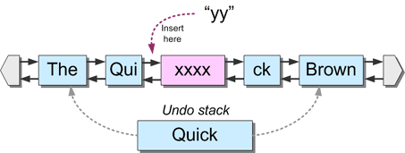
This time a single span is inserted into the list, in-between the “Qui” and “xxxx” nodes. The undo-event which represents this action is a span-range holding the spans either side of the insertion-boundary. This ‘span boundary’ is distinguised by the ‘*’ symbol. Notice how these spans again maintain their links back into the linked-list.
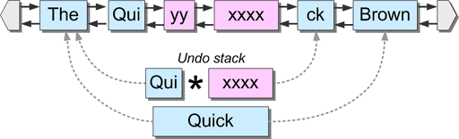
Another important detail to notice is how the undo-stack has grown with the new span-range pushed onto it. Hopefully you can see how multi-level undo would be implemented: Each time we edit the sequence we push another span-range onto the undo-stack. Each entry in this stack represents the range of spans affected by that particular edit operation. Every time we perform an “undo” a span-range is “popped” from the undo-stack and re-inserted back into the main linked-list. The spans that it replaces are removed, but still preserve their own links back into the list. Each span-range that is removed during an undo is pushed onto a redo stack.
The code for span-boundary-insertion is much simpler because only one span is inserted this time:
// initialize a new 'undo'
span_range *oldspans = init_undo(index, length, action_insert);
span_range newspans;
// this is a 'boundary insertion'
oldspans->spanboundary(sptr->prev, sptr);
// single span for the inserted data
newspans.append(new span(modbuf_offset, length, modifybuffer_id));
// insert the new span into the sequence in place of the old ones
swap_spanrange(oldspans, &newspans);
sequence_length += length;
The code follows the same pattern as before: define the ‘oldspans’, collect together the ‘newspans’ and then swap them around. The only difference this time is how the ‘oldspans’ are defined. No spans were modified in the boundary-insertion case so the span-range represents a span-boundary by pointing to the spans either side of the boundary we inserted at.
Erasing Data
Erasing data from the sequence is rather more complicated. In fact, it is a lot more complicated. The problem is that deletions can potentially encompass several spans, and can start and stop mid-span as well. Here are the scenarios that must be catered for:
- Erase starts at a span boundary.
- Erase starts mid-way through a span (in which case the span must be split).
- Erase stops at a span-node boundary.
- Erase stops mid-way through a span (again the span should be split).
We must also consider the case where a deletion can encompass several spans. All four scenarios above must be taken into account in this case. There is also the case were a deletion is contained entirely within a single span. Again, boundary or mid-span conditions must be taken into account.
The mistake I made with HexEdit’s piece-chain implementation was to handle all of these cases separately which resulted in hugely over-complicated code. What I should have done, and what I have done this time around, is have one ‘general-case’ that handles all scenarios:
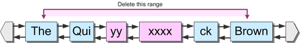
The example above shows a deletion which encompasses several spans, and both starts and stops mid-way through a span as well.
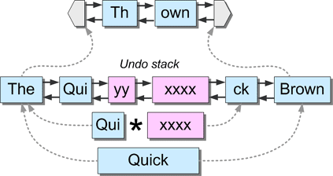
Because the deletion affected every span in the list, the entire linked-list has been pushed onto the undo-stack in the form of a span-range, to be replaced with just two new spans that represent the data before and after the deleted range.
The code starts by checking to see if the deletion starts mid-way through a span. If it does, that span is added to the oldspans span-range, and a replacement span created which represents the data in the span just before the deletion-index. This ‘split’ span is added to the newspans range:
// does the deletion *start* mid-way through a span?
if(remoffset != 0)
{
// split the span - keep the first "half"
newspans.append(new span(sptr->offset, remoffset, sptr->buffer));
// have we split a single span into two?
// i.e. the deletion is completely within a single span
if(remoffset + removelen < sptr->length)
{
// make a second span for the second half of the split
newspans.append(new span(
sptr->offset + remoffset + removelen,
sptr->length - remoffset - removelen,
sptr->buffer)
);
}
removelen -= min(removelen, (sptr->length - remoffset));
// archive the span we are going to delete
oldspans.append(sptr);
sptr = sptr->next;
}
Once this first scenario has been handled, a loop is used to process any further spans until we reach the end of the deletion-range. Every node that falls under the ‘delete range’ is appended to the oldspans container object. A special-case is used to handle the scenario when a delete stops mid-way through a span.
// we are now on a proper span boundary, so remove
// any further spans that the erase-range encompasses
while(removelen > 0 && sptr != tail)
{
// will the entire span be removed?
if(removelen < sptr->length)
{
// split the span, keeping the last "half"
newspans.append(new span(
sptr->offset + removelen,
sptr->length - removelen,
sptr->buffer)
);
}
removelen -= min(removelen, sptr->length);
// archive the span we are replacing
oldspans.append(sptr);
sptr = sptr->next;
}
The very last thing to do is swap out the ‘oldspans’ with the ‘newspans’ and update the sequence-length:
swap_spanrange(&oldspans, &newspans);
sequence_length -= length;
All of this code can be found in the sequence::erase member function, but is a lot more complicated than what I have shown here. In particular there are special-cases for ‘optimized’ deletes which almost doubles the amount of code required. I have no intention of detailing this process any further, just look at the sourcecode download of you are interested.
Replacing Data (overwriting)
Data-replacement is the most complex operation to implement, and should be thought of as a hybrid form of erase and insert, combined into a single function. All of the complexities of these first two operations must be taken into account when implementing sequence::replace. In addition the ‘optimized replace’ scenario - in which multiple, consecutive replaces are coalesced into a single operation - makes replace very complicated indeed. I am not going to go into any great detail - suffice to say, the sourcecode download contains everything you need to know.
When I originally wrote HexEdit’s sequence class, yet another mistake I made was to write a separate routine for replacing data in the sequence. I took the already overcomplicated ‘erase’ function and duplicated the code into a new ‘replace’ function. I then merged in the code for inserting data which made it even more complicated. This made code-maintanence very difficult because of the code-duplication problems.
I didn’t make the same mistake second time around. Neatpad’s sequence::replace function is simply a wrapper around sequence::erase and sequence::insert. First of all erase is called to delete the range of data that will be replaced. This temporarily shortens the sequence. Next, insert is called with the ‘replace’ data which is inserted into the place where the delete occured, re-growing the sequence back to it’s original length. Importantly, these two actions are grouped together so that they appear as a single undoable action.
bool sequence::replace(size_w index, seqchar *buffer, size_w length)
{
group();
erase(index, length);
insert(index, buffer, length);
ungroup();
}
Writing sequence::replace this way significantly simplified the sequence’s implementation. It wasn’t quite as straight-forward as I make out because of the problem of ‘optimized replaces’ - the sequence::erase function must have a small amount of logic to cater for ‘regular erases’ vs ‘replace erases’. But in general I found this ‘shortcut’ far more preferable to what I had done before. Importantly, any time I have to change the erase or insert functions (because of a bug for example) I don’t have to modify the replace function in parallel - it gets all changes for free because it’s just a simple wrapper function.
Piece-chain demo application
Testing a piece-chain implementation is rather difficult because of all the subtle scenarios that can occur. I started off with a simple console application in which I would type “insert index text”’ or “erase index length”. It was rather cumbersome so I took the UspLib Demo application which I wrote for a previous tutorial, and came up with the “Piece Chain Demo”:
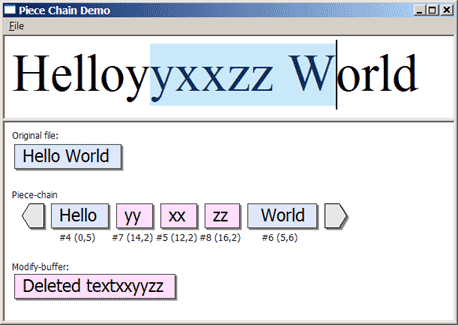
I found this form of test-harness very useful as it gives instant feedback as to the state of the piece-chain after each operation. It also shows the contents of the Original File, Modify-Buffer, and also the Undo stacks. It’s not so useful now that I have integrated the piece-chain into Neatpad, but at the very least it might be interesting to anyone who is attempting to learn more about piece-chains. Give it a whirl!
Linked Lists vs Binary Trees
There is some debate as to how a piece-table should be represented. The two main choices are either a linked-list, or some form of binary tree. For the time-being Neatpad uses a doubly-linked list to manage it’s piece-table. This method has been proven to be effective in my HexEdit application, but it remains to be seen whether or not a linked-list is suitable for a text editor:
Linked lists are very simple to manipulate and traverse. However locating a specific character-position can be potentially very slow if there are a large number of nodes in the list, because the list must be traversed from it’s start any time a particular node is required. Caching can solve most of the linked-list’s speed problems, because the majority of operations on the sequence will be very localized (you can only type within a fixed viewport of the document at any one time). Caching the last-accessed span can yield large improvements here.
Binary trees on the other hand are the exact opposite. A balanced binary tree is great for searching but bad for inserting/modifying. Searching is always O(log N), so locating a specific character-position is always fairly fast, even for a sequence that holds many thousands of nodes. However manipulating a binary-tree is always fairly expensive compared to the linked-list. Any time a node is inserted into a binary-tree, the tree must be rebalanced, and all children of that node must be updated to reflect the change.
In both cases the complexity of the data-structure we choose (the number of spans it contains) is a function of the number of edits to the file and is not at all related to the size of the file or the number of lines it contains. This makes the piece-chain a great data structure because it scales very well, even for very large files. It is far preferable to a “linked list of lines” model, which does not scale well for large files. The piece-table is definitely the data structure of choice in my opinion.
If we were concerned purely with edits to the piece-table, I believe the linked-list is the superior choice. Should we need to use the data-structure as a way to perform other kind of searches (such as looking up line-numbers, or mapping line-numbers to character-offsets) then this might require a move to a binary-tree implementation.
C++ templates and VS2005
For the moment I have resisted the temptation to implement the sequence class using C++ templates. This is primarily due to the poor template support in VC6.0, but I also wanted to make the initial version ‘clean’ enough for non-C++ programmers to understand. Currently the sequence class uses a hard-coded 'seqchar' datatype as it’s basic unit of text, which is currently a 16bit WCHAR type. It is simple to re-target the sequence to any other character type by simply changing the typedef statement at the top of sequence.h, so for the time-being templates would be a luxury rather than a necessity.
However I have recently started using VS2005 and now have the opportunity to take advantage of a much better C++ compiler. If I do migrate to VS2005 it will make it harder to compile Neatpad under VC6.0 because the projects will be incompatible. And if I change the sequence-class to a template implementation, Neatpad won’t compile under VC6.0 at all. What do people think about this proposal? If I get no comments I’ll go ahead and migrate to VS2005…
Conclusion
I have deliberately tried to keep the piece-chain implementation as simple as possible. I see no need at this stage to migrate to a binary-tree implementation for the piece-chain, although future tutorials may have to address this issue if performance becomes a problem. The important thing is, it doesn’t really matter if we use a list or a tree - everything is encapsulated inside the sequence C++ class so changing to a binary-tree would have no real impact on the rest of the design.
Piece-tables are actually a very simple concept and are not as complicated as they may seem from this article. The complexities arise from the way the piece-chain is optimized each time an edit occurs. Consecutive inserts, erases and replaces are coalesced in such a way that the number of spans in the list is always at a minimum. This requires that individual span’s be adjusted ‘in place’ rather than introducing new spans into the table each time an edit occurs. This also complicates the undo/redo support as well. Without this optimization piece-chains are very simple, but unfortunatey a ‘real world’ piece-chain must have these features if it is to be successful.
The next tutorial will focus on how I integrated the piece-chain design into Neatpad. There are a lot of issues to discuss, mainly due to the subtleties of editing Unicode text. I also need to implement proper ‘memory management’ and large-file support - this will be covered in a later tutorial as well.